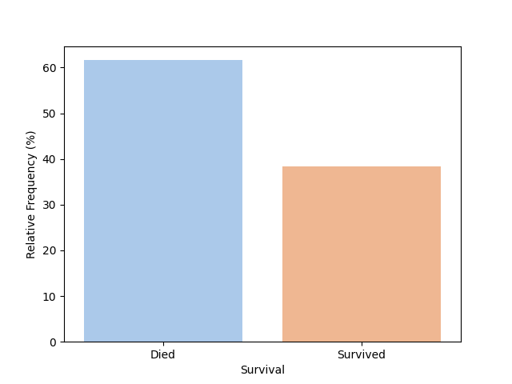
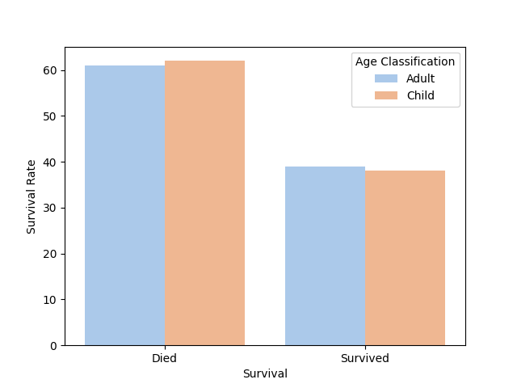
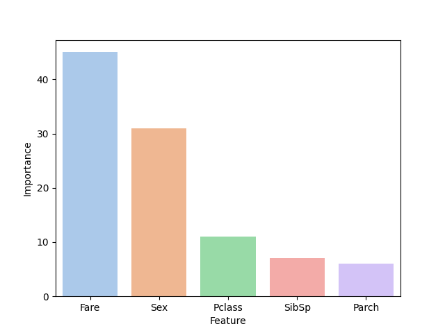

Passenger Survival on the Titanic
(Random Forest Classifier)
In 1912 the Titanic, a luxury passenger ship, sank in route from England to the United States. Women and children were evacuated first. Third class passengers did not realize the severity of the situation until it was too late for them to evacuate the ship, so most of those passengers did not survive the catastrophe.

The Titanic dataset contains 891 passengers and it is balanced with 40% of the passengers surviving the catastrophe. The dataset is skewed towards males, with 80% of the data composed of male passengers. There were more males included in this Titanic dataset than females, but it is unclear whether there were more males on the ship than females. Most of the data is categorical, with the only continuous data included being Age and Fare.
Only three of the columns are missing values. The three columns are Ages, Cabin, and Embarked. There are 177 passengers missing Ages, 687 missing Cabin numbers, and 2 missing from Embarked. The minimum fare for the passengers is zero dollars/Euros with a quarter of the data falling below 8 units.

Preliminary analysis showed that it is more likely that a female survives the crash than a male, while it equally likely that an adult and child survive the crash. An adult is considered a person older than 9 years of age. Both children and adults have a 40% chance of surviving the incident. Age is not included as a feature for the model.
Families with 4 or more children/parents had a higher chance of dying in the crash. Similarly, families with 3 of more siblings had an increased chance of dying during the crash, so these factors are considered in the analysis.
The fare of the passengers who survived the crash is significantly different from those who do not survive, so fare is considered as a feature in the analysis. It is more likely that a passenger in Class 1 than Class 3 survive the crash.
Two potential models that could be used to predict the survival of a passenger on the Titanic are Multi-variable Logistic Regression and a Decision Tree Classifier. They are both simple models that can be highly effective on small datasets. Continuous predictors work best for Logistic Regression models, while categorical data is beneficial for a Decision Tree classifier, so the selected features are categorized for the analytics.
The models are evaluated using Mean Squared Error (MSE), which is the average squared difference between the predicted and actual values. A lower value indicate better performance of the model. Also, evaluated on accuracy since the dataset is balanced.
The Decicion Tree Model performs with an accuracy of 79% and the Random Forest model performs with an accuracy of 78%. Both have a Mean Squared (MSE) of ~0.22. The Random Forest Model is selected for predicting whether a passenger lives of not on the Titanic. Feature analysis is performed on the Random Forest model to better understand the influence of each feature on the performance of the classification of passengers.

Fare and Sex are the two most important features used to classify whether a passenger on the Titanic survives or dies in the Random Forest model. The Fare per person (Fare/Family Size) is calculated as a feature for the model to minimize the redundancy of information. Family Size is the sum of siblings, children and parents on the ship. These factors influence the survival of a passenger on the ship. The model is simplified from five features to three features. The three features are Passenger Class, Passenger Sex, and Fare per Person.
After reducing the model complexity, the model continues to perform with an accuracy of 79% and a MSE of ~0.2.
There are two next steps that may improve the analysis of this dataset.
1. Balance by sex of the passenger
2. Impute the ages of the missing passengers and use a two tail t-test to determine how the avergae ages of the passengers who live and don't differ
References:
https://www.kaggle.com/competitions/titanic/data
https://towardsdatascience.com/a-beginners-guide-to-kaggle-s-titanic-problem-3193cb56f6ca
https://web.stanford.edu/class/archive/cs/cs109/cs109.1166/problem12.html
https://anelmusic13.medium.com/how-to-score-top-3-in-kaggles-titanic-machine-learning-from-disaster-competition-13d056e262b1
https://www.britannica.com/topic/Titanic